Факт интерфейса
Скриншоты получены из живого React/API/PostgreSQL. Учебные записи помечены [ДЕМО UX].
UX / 01 · спецификация и комментарии
Поиск спортивного места, набор игроков и понятный результат каждого действия.
БОЛЬШЕ ИГРЫ. БОЛЬШЕ ОБЩЕНИЯ.
О комплекте
| Критерий | Материал |
|---|---|
| 2–3 сценария от начала до результата | J1: немедленный набор; J2: поиск/вступление; J3: исправление/модерация |
| Ветки, ошибки и валидация | Диаграммы J1–J3, 16 UI-состояний, каталог ошибок и ограничения полей |
| Стиль и библиотека | Цвет, шрифт, сетка, размеры, кнопки, поля, статусы, карточки, обратная связь |
| Не менее трёх экранов | S01 площадки, S02 форма игры, S03 карточка, S04 исправление, S05 модерация; дополнительно вход |
| Высокая оценка | P1, прото-персоны, навигация, работающий локальный прототип, протокол теста и a11y-чек-лист |
Скриншоты получены из живого React/API/PostgreSQL. Учебные записи помечены [ДЕМО UX].
Автономный прототип показывает inline-ошибки, крупные цели и возврат в игру после входа. Это ещё не все изменения продукта.
В BA есть один обезличенный письменный ответ P1. Новые интервью и результаты людей не выдуманы.
Пилот NFR02, screen reader, полный zoom/spacing и все WCAG-проверки ещё требуют выполнения.
Изображения — фрагменты экранов 390 × 844; исходные PNG находятся рядом в assets и допускают увеличение. Подписи и комментарии описывают результат и ограничения.
Основания / исследование
P1: одного полученного письменного ответа достаточно для направления дизайна, но недостаточно для обобщения о жителях Вильнюса.
| Основание в BA | UX-следствие | Гипотеза для проверки |
|---|---|---|
| Сложно собрать достаточно волейбольных игроков | Явное число дополнительных мест; Immediate | Понимают ли, что организатор не занимает дополнительное место |
| Использовались знакомые и Telegram | Структурированная карточка вместо сборки сведений из переписки | Может ли игрок быстро сравнить подходящие приглашения |
| Важны место, уровень, начало/конец и мяч | Обязательные параметры, инвентарь, Europe/Vilnius | Замечают ли инвентарь до вступления |
| Полезны и планирование, и спонтанный набор | Planned / Immediate в одной форме | Понятен ли выбор режима и достаточен ли срок по умолчанию |
| Нужна актуальность сведений о месте | Источник, время, исправление и модерация | Понятно ли, что Pending не меняет публичную карточку |
Источник: BA, введение и аналитическая часть; подробнее — research-and-test-plan.md.
Пользователи / гипотезы
Цель: нужны два дополнительных игрока на выбранном месте. Контекст: телефон, немного времени, мяч может отсутствовать. Нужны короткая форма, предпросмотр и одна публикация. Основание: P1 + UC01.
Цель: проверить место, уровень, время и свободное место, подтвердить намерение, при необходимости выйти. Нужны прозрачные статусы и альтернативы при Full/Cancelled/Expired. Основание: P1 + UC02.
Цель: сообщить об ошибке и понять, принята ли правка. Нужны источник/обоснование, Pending, решение с причиной. Основание: US05–06/13–14, отдельного интервью нет.
| Роль | Проверяем понимание |
|---|---|
| Организатор | Что означает «два дополнительных»? Где меняется срок? Как понять, что повтор не создал дубль? |
| Игрок | Занялось ли место? Почему присоединение отказано? Как выйти? |
| Автор исправления | Уже ли обновилась публичная карточка? Кто видит комментарий? Что делать при устаревшей версии? |
| Модератор (рабочая роль) | Какая версия рассматривается, какие последствия одобрения, как объяснить отказ? |
Информационная архитектура
| Зона | Hash-маршруты |
|---|---|
| Открытые страницы | /#/ → /activities/{slug} → /locations/{id}; /sessions → /sessions/{id} |
| Вход и своё | /login, /register, /me, /my-games, /contributions |
| Вклад | /locations/new, /location-corrections/{id}, /submissions/{id}, /reports/new |
| Модерация | /moderation, /moderation/submissions/{id}, /moderation/reports/{id} |
J1 / UC01 · US09
Актор: вошедший организатор на одобренной площадке, выбран вид спорта. Цель: одно действующее приглашение на два дополнительных места, Intermediate, нужен мяч, срок 60 минут.
| Шаг / ветка | Поведение и результат |
|---|---|
| Основной путь | Срок 15–240 минут; старт задаёт сервер. После успеха открыта карточка, видны параметры и управление. Модерация обычного корректного приглашения не требуется. |
| Другой режим | Planned требует будущее начало и более позднее окончание; всё показывается по Europe/Vilnius. |
| Дубли / лимиты | Один неотменённый, неистёкший Immediate на организатора + место + спорт, включая Full; максимум три создания за скользящий час. |
| Место изменилось | Убрали выбранный спорт → явный новый выбор. Сняли площадку → новое создание запрещено. |
| Постусловие | Либо ровно одна запись, либо понятная ошибка без незаметного второго приглашения. |
J2 / UC02 · US03–04,10–11
Актор: игрок, не организатор. Цель: найти подходящую игру, подтвердить один отклик, увидеть результат; позже выйти через карточку / Мои игры.
| Ветка | Что видит пользователь |
|---|---|
| Гость | Вход, затем возврат в исходную игру в целевом прототипе; подтверждение отдельное. Текущее поведение возврата ещё требует доработки. |
| Повтор или потеря ответа | Повтор успешного отклика не занимает второе место; карточка показывает актуальное состояние после обновления. |
| Игрок выходит | Восстанавливается ровно одно место, если отклик был активен; повтор выхода не увеличивает вместимость ещё раз. |
| Full → Open | Выход участника или увеличение вместимости открывает ещё действующую полную игру. |
| Постусловие | Ровно один отклик либо ни одного. Онлайн-отклик не подтверждает физическое присутствие и не бронирует площадку. |
J3 / US06,13–14
Актор: вошедший автор; затем назначенный модератор. Цель: отправить правку с источником/пояснением и получить понятный результат без незаметной перезаписи чужих данных.
| Участник / переход | Контракт |
|---|---|
| Автор | Видит свой Pending, комментарий и решения. Другой обычный игрок не читает чужое обращение. |
| Модератор | Сравнивает исходные/предложенные данные, проверяет источник, выбирает решение и причину 10–1000 символов. |
| Одобрение | Публичные поля, активности и время обновляются вместе; сохраняется аудит. |
| Снятие / выключение спорта | Соответствующие активные игры отменяются; история сохраняется. Приватное обоснование не копируется в публичную причину отмены. |
| Разница с жалобой | Исправление предлагает новые значения; жалоба отмечает проблему конкретной площадки/игры. Оба типа видны в Моих обращениях, но не смешиваются. |
Визуальный стиль
Тёплый светлый фон, тёмно-зелёный текст, насыщенное основное действие и лаймовый акцент. Цвет дополняет текст, а не заменяет его.
#f7f7f0#172e24#193e2c#d5f37c#fffef9#853122| Основа | Текущий продукт / целевая спецификация |
|---|---|
| Шрифт | Segoe UI, system-ui, sans-serif. Без внешней загрузки шрифтов. |
| Типографика | Заголовки 28–44 px на внутренних экранах; поля 14–15 px. В прототипе основной текст 16 px, подсказки ≥13 px; мелкие тексты продукта отмечены для проверки. |
| Ритм / поверхности | Отступы кратные 4: 8/12/16/20/24/32. Карточки со скруглением 12–16 px, поля 7–8 px, тонкие границы. |
| Действия | Один доминирующий CTA на шаг. Вторичные действия спокойнее; отмена — красный текст с пояснением и подтверждением. |
| Фокус | Контур 3 px #73521b, offset 5 px. Не убирать outline. |
| Адаптивность | 360/390: одна колонка; 768: адаптивные блоки; 1440: список/карта или детали/действия рядом. Карточки не требуют горизонтального скролла. |
Основа: src/SteamIRL.Web/src/styles.css, accounts/styles.css, sessions/styles.css, moderation/styles.css. Прототип сохраняет палитру и семантику, но отдельно показывает целевые UX-улучшения.
Библиотека / C01–C06
| ID / компонент | Состояния и назначение |
|---|---|
| C01 · Primary button | Default, hover, focus, busy/disabled. Не допускает повторное выполнение при занятой отправке; действие описывает результат. |
| C02 · Secondary / danger | Обновить / назад / другая игра; опасная отмена требует явного подтверждения и возможности отказаться. |
| C03 · Game card | Спорт + площадка, время, уровень, дополнительные места, текстовый статус; ссылка на подробности. |
| C04 · Status badge | Open/Full/Cancelled/Expired. Сохранённый факт отмены важнее истечения; Full может вернуться в Open. |
| C05 · Tabs / pagination | Предложения / жалобы, текущий статус и страница. Переключение фильтра возвращает страницу 1; крайние кнопки недоступны. |
| C06 · Location/map block | Список с теми же сведениями, адрес, активности, источник/UpdatedAt; карта — дополнительное представление. |
Библиотека / C07–C12
Окончание должно быть позже начала.
| ID / компонент | Контракт |
|---|---|
| C07 · Input / select / textarea | Постоянный label, обязательность и ограничение. Placeholder — пример, не единственная подпись. Не передавать ошибку только цветом. |
| C08 · Capacity stepper | Целое 1–30; кнопки −/+ с понятным доступным именем, границы блокируются; организатор не учитывается. |
| C09 · Checkbox group | Legend описывает группу. Выбран минимум один вид спорта для предложения; label — кликабельная цель. |
| C10 · Error summary + inline | Текст причины и восстановление; фокус на первом ошибочном поле, aria-invalid + aria-describedby в целевом UX. В продукте часть ошибок пока общая. |
| C11 · Success / notice | role=status для результата, role=alert для срочной ошибки; состояние не объявляется снова без необходимости. |
| C12 · Confirm panel | Подтвердить участие / пока не записываться; отменить игру / продолжить. Действие выполняется только после подтверждения. |
Живые варианты можно нажать в prototype/index.html → «Библиотека компонентов». Декоративные образцы на этой странице PDF не являются интерактивными кнопками.
S01 / площадки · факт интерфейса
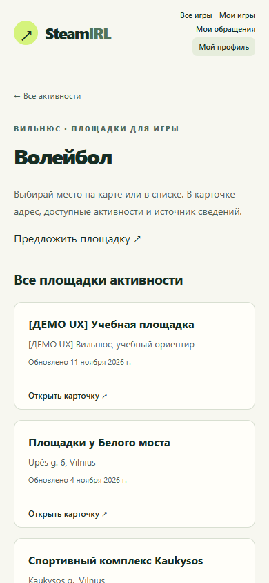
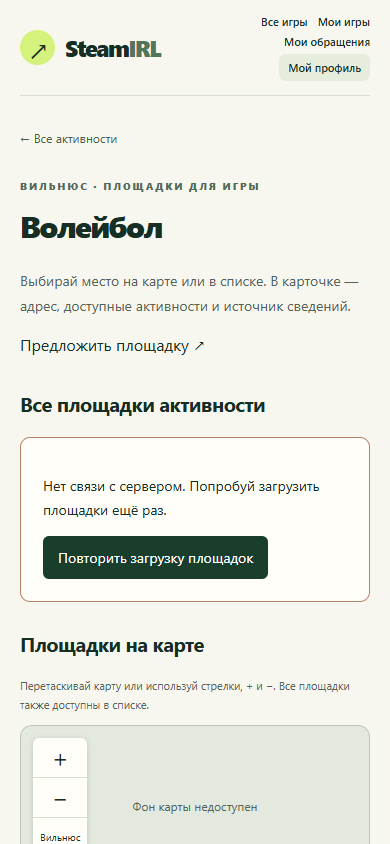
01. Выбор активности ограничивает список и метки одинаково. 02. При отказе тайлов список и карточки остаются доступны; при отказе API есть отдельные повторы списка/меток. 03. Ошибка сообщает причину и действие восстановления, а не оставляет пустой экран.
Внешняя доставка OSM в среде не подтверждена. Обычный список на скриншоте загружен из живого API; это не проверка фактической доступности учебной площадки.
S02 / создание · факт интерфейса
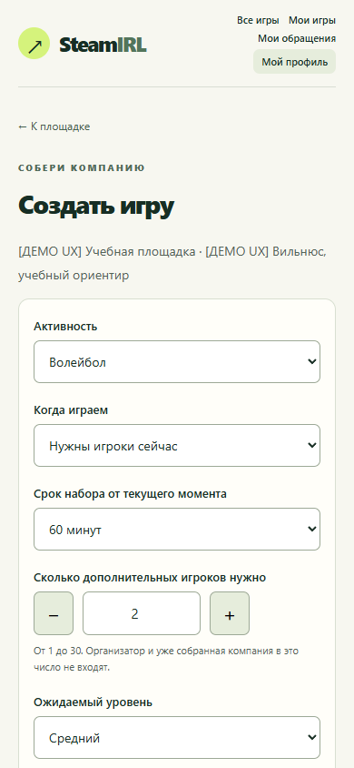
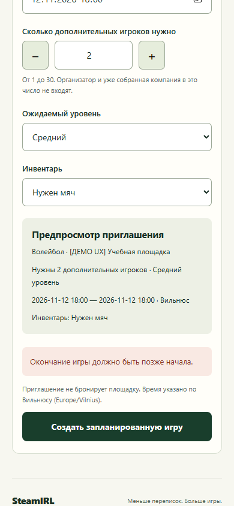
01. Спорт/площадка предвыбраны, количество — дополнительные игроки. 02. Immediate задаёт срок, Planned — начало/окончание. 03. Ошибка не создаёт запись.
UX-01: сейчас сообщение времени общее внизу формы. В целевом прототипе оно связано с полем окончания и переводит туда фокус. Скриншот не выдаётся за уже улучшенный интерфейс.
S02 / альтернативы · факт интерфейса
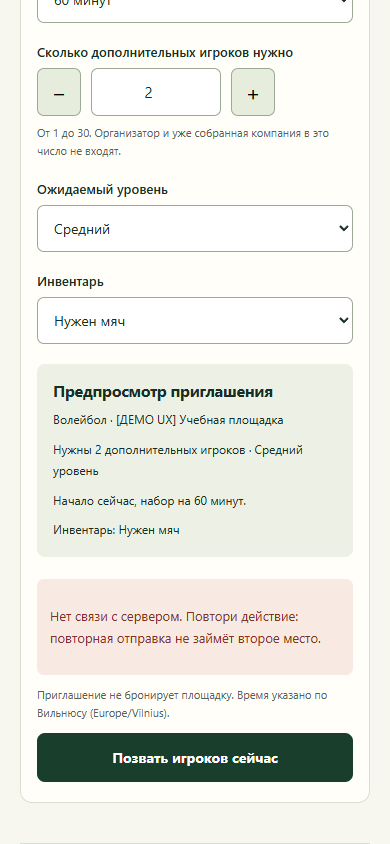
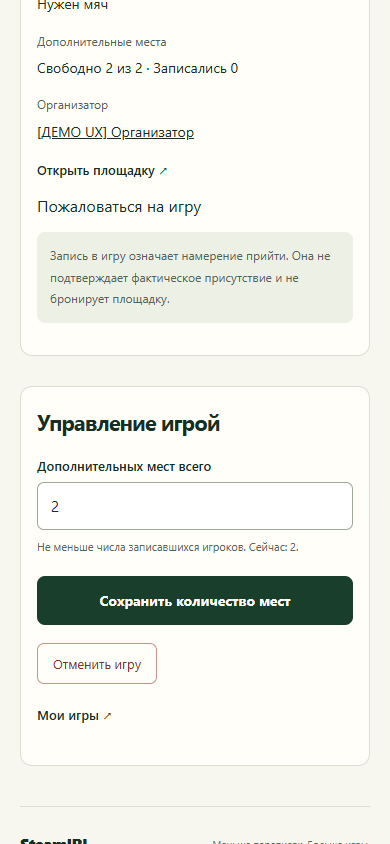
01. После сетевой неопределённости повторяет исходное намерение. 02. Успех открывает одну созданную игру и показывает дальнейшие действия. 03. Новое осознанное действие отличается от повтора.
В захваченном сетевом примере заблокирован запрос токена до отправки. Отдельные браузерные проверки проекта также подтверждают потерю ответа после фиксации и отсутствие второй записи. Все игры учебные.
S03 / карточка · факт интерфейса
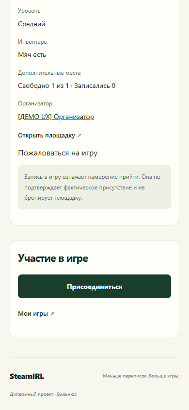
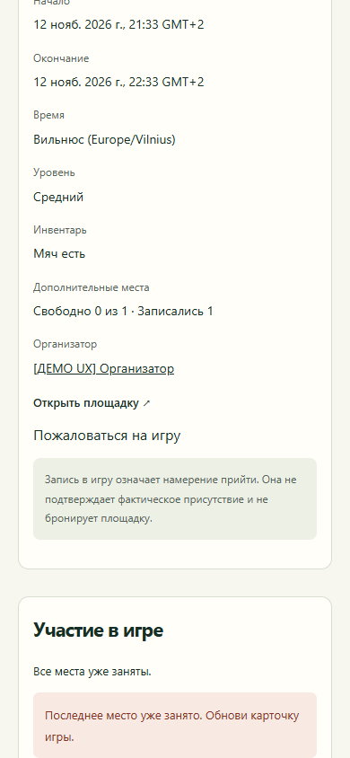
01. До подтверждения видны время, уровень, инвентарь и свободные места. 02. Другой браузер успел вступить раньше — проигравшему сервер отказал, новый отклик не создан. 03. Цвет сопровождается текстом.
UX-05: рядом с ошибкой нужен явный повтор/поиск другой игры. В текущем приложении кнопка обновления находится выше; в прототипе восстановление рядом.
S03 / результат и вход · факт интерфейса
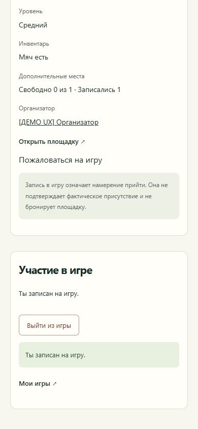
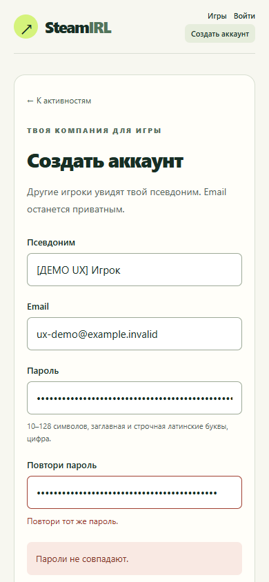
01. Участник видит подтверждение и «Выйти из игры». 02. При регистрации несовпадение паролей объясняется текстом, ошибочный ввод не отправляется как успешный аккаунт. 03. В прототипе вход демонстрационный: настоящий пароль не запрашивается.
UX-03: целевой UX возвращает гостя после входа к исходной игре без автоматического вступления; в продукте это остаётся доработкой.
S04 / исправление · факт интерфейса
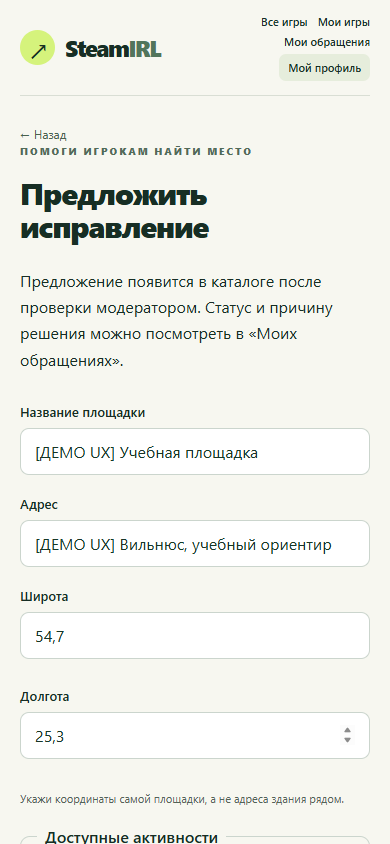
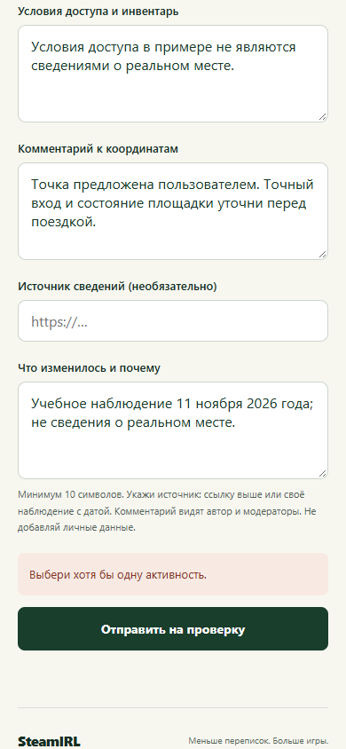
01. Обязательны название, адрес, корректные координаты, ≥1 активность и обоснование исправления ≥10 символов. 02. Необязательный источник — HTTPS без данных входа. 03. При ошибке ввод остаётся; публичная площадка не меняется.
Снимки содержат учебные адреса и комментарии. Это не сбор персональной геолокации.
S04–S05 / переход ролей
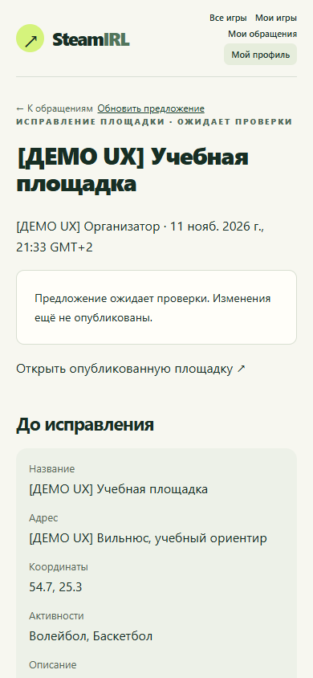
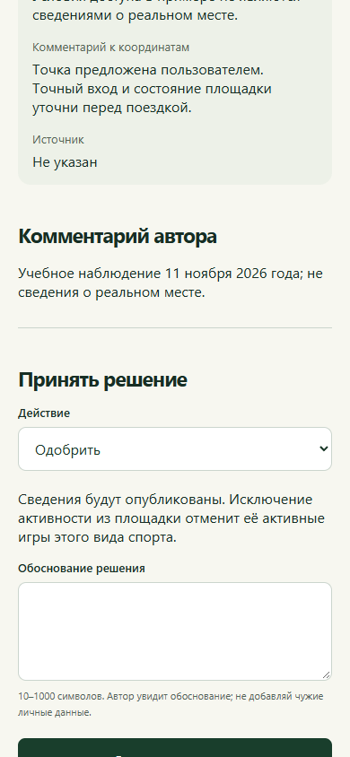
01. Автор узнаёт, что правка ещё не опубликована. 02. Модератор сравнивает версии и обязан объяснить решение. 03. Чужой обычный пользователь не видит приватный комментарий или жалобу.
Изображение модератора — фрагмент области решения; исходные/предложенные данные расположены выше. Права проверяет сервер, а переключатель роли в автономном прототипе — только учебная имитация.
S05 / конфликт версии · факт интерфейса
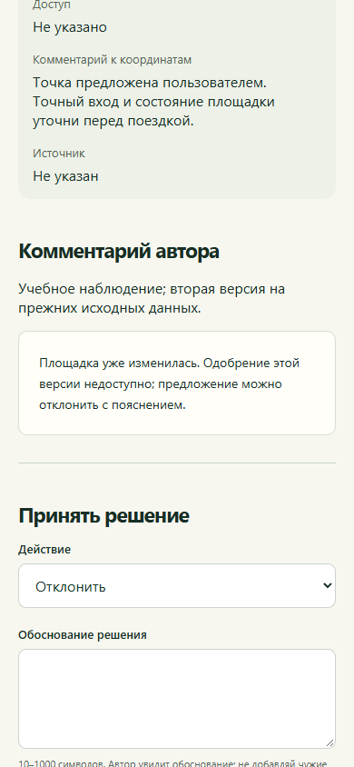
Два автора предложили исправления от одной версии. Первое одобрено, публичная запись обновлена. Второе теперь устарело.
Одобрение недоступно. Модератор может отклонить с объяснением; автор подготовит новую правку по текущим данным.
История, автор, причина и время решения. Не происходит скрытого перезаписывания первой принятой версии.
Поля / ошибки / восстановление
| Поле / случай | Правило | Обратная связь |
|---|---|---|
| Дополнительные игроки | Целое 1–30; при редактировании ≥ числа откликов | «Нужно от 1 до 30 дополнительных мест…»; сохранить ввод |
| Начало / окончание Planned | Будущее начало; окончание позже; Europe/Vilnius | Ошибка у соответствующего времени в целевом UX; не подменять неоднозначное DST |
| Immediate | 15–240 мин; старт серверный | Срок и окончание видны до публикации |
| Действующее приглашение | Та же пара места/спорта у организатора, включая Full | Ошибка + ссылка «Открыть действующее приглашение» |
| Название / адрес | 2–200 / 2–300 символов | Постоянные ограничения, исправить без очистки |
| Координаты | Широта −90…90; долгота −180…180 | Показать допустимый диапазон, без произвольной точки по умолчанию |
| Активности | Минимум одна известная, без дублей | «Выбери хотя бы одну активность» |
| Обоснование исправления | 10–2000 символов | Источник/наблюдение и дата, видимость автору/модераторам |
| Источник / решение | Источник HTTPS ≤1000; причина решения 10–1000 | Показать формат/длину; не публиковать чужие данные |
| Нет связи / истёк вход | Неясный результат / нет действующей сессии | Сохранить форму, безопасный повтор / снова войти |
| Full / Cancelled / Expired | Нельзя создавать новый отклик | Точный статус, без ложного успеха, обновить / другая игра |
Это контракт UI, не обещание одинакового расположения ошибок в текущем коде: часть ограничений уже нативная HTML-валидация, часть серверная и часть требует UX-01/06. Пароль/секреты не пишутся в UX-файлы.
Юзабилити / план, не результат
Выборка: минимум пять согласившихся совершеннолетних участников, желательно вне круга автора. Тестируем взаимодействие с учебными записями, без настоящего email/пароля. Отдельное согласие на запись экрана; право остановиться.
| Задание | Старт / результат | Измерение |
|---|---|---|
| T1 / UC01 | Вошедший организатор уже на карточке места → один Immediate на два дополнительных места, средний уровень, нужен мяч, час | BA NFR02: ≥80% (минимум 4 из 5) без помощи за ≤60 с на 390 px |
| T2 / UC02 | Каталог → подходящая игра → один отклик → выход | Успех, время, просьбы о помощи, понимание результата; порог не выдумывается |
| T3 / US06 | Карточка → исправление с обоснованием → Pending / статус | Успех и понимание отложенной публикации; порог времени требует пилота |
| ID | T | Успех | Время | Помощь | Наблюдение |
|---|---|---|---|---|---|
| P02–P06 | T1–T3 | — | — | — | Тест с людьми не проведён |
Доступность / измерение
| Проверка | Статус на 11.11.2026 |
|---|---|
| Reflow | S01–S03 на 360/390/768/1440: без горизонтальной прокрутки (12 сочетаний) |
| Подписи полей | В DOM выбранных экранов не найдено полей без label/aria-name |
| Клавиатура / фокус | Tab/Enter и skip-link проверены в браузерных сценариях; целевая ошибка должна фокусировать первое неверное поле |
| Ошибки / статусы | Текст + alert/status присутствуют; связь ошибки времени с полем требует UX-01 |
| Малые цели | Навигационные ссылки около 15 px и повтор карты около 22 px: нужны проверка spacing/исключений и UX-02 |
| Не подтверждено | NVDA/VoiceOver, все нативные zoom/text-spacing, полный аудит WCAG и PDF/UA |
| Пара | Цвет / фон | Отношение |
|---|---|---|
| Основной текст | #172e24 / #f7f7f0 | 13.44:1 |
| Вторичный текст | #536358 / #f7f7f0 | 5.93:1 |
| Основное действие | #ffffff / #193e2c | 11.89:1 |
| Ошибка | #853122 / #f9e9e3 | 7.23:1 |
| Открытая игра | #23442d / #e3eed8 | 9.03:1 |
| Мест нет | #674713 / #f3e8ce | 6.93:1 |
| Фокус / белый | #73521b / #ffffff | 7.11:1 |
Расчёт sRGB для сплошных цветов из CSS: не аудит всех фонов/пикселей. BA NFR08: ≥4.5:1 для обычного текста, ≥3:1 для крупного. WCAG 2.5.8: 24 CSS px с исключениями; 44 px — выбранный ориентир прототипа, не текст требования AA.
Источники: W3C WCAG 2.2, Understanding 3.3.1 / 3.3.2 / 2.5.8; полные ссылки — accessibility.md. Это частичная проверка, не заявление о полном соответствии AA.
Доработки / приоритет
| ID | Наблюдение | Предлагаемое решение / статус |
|---|---|---|
| UX-01 · P1 | Общая ошибка времени внизу формы | Inline + aria-invalid/describedby, фокус первого поля. Показано в прототипе; продукт ещё требует изменения. |
| UX-02 · P1 | Мелкие цели в шапке и повторах | Навигация/кнопки ≥44 px, разбор исключений spacing. Целевые размеры в прототипе. |
| UX-03 · P1 | Вход уводит гостя в профиль | Вернуть к исходной игре; отдельное подтверждение. В прототипе реализовано. |
| UX-04 · P2 | CTA создания может уйти ниже длинной карточки/карты | Проверить более раннее размещение на мобильном; измерить в T1. |
| UX-05 · P2 | После Full обновление расположено выше ошибки | Обновить / другая игра рядом; целевой вариант в прототипе. |
| UX-06 · P2 | Обязательность и ограничения обозначены неодинаково | Единая легенда обязательных полей и постоянные подсказки. |
Передача / проверка экспертом
| Проверка | Как подтвердить |
|---|---|
| Сценарии и ветви | Пройти J1 / J2 / J3 и сетевой отказ, Full, отмену, устаревшую версию |
| Валидация | Ввести 0 игроков; окончание раньше начала; короткое обоснование; убрать активности |
| Приватность / BA | Сравнить с docs/ba-traceability.md; прототип не подтверждает посещение и не бронирует |
| Доступность | Проверить клавиатуру и фокус; сопоставить измеренное и оставшееся в чек-листе |
| Честность исследования | P1 — один ответ из BA; 5-пользовательский тест только запланирован |
Отдельный ZIP содержит PDF и соседние файлы с сохранением структуры. Для переносимости открывать prototype/index.html из распакованного комплекта; абсолютные пути машины автора не нужны.